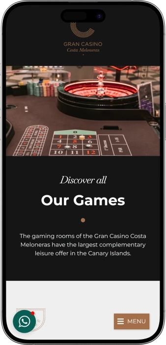

Oferta exclusiva de bienvenida de
Oferta exclusiva de bienvenida de
Gran Casino Costa Meloneras — juegos, póker, ambiente y ocio
Los mejores casinos
Detalles de bonificación
Casino
Bonos
Rate
Giros gratis
Más info
Conseguir
Ventajas
-
Botes progresivos en tragamonedas muy populares
-
Torneos de póker con premios atractivos
-
Ruleta y blackjack con pagos ágiles
-
Fichas promocionales y tiradas gratis frecuentes
-
Horario amplio hasta la madrugada
-
Ambiente elegante para una noche especial
-
Ubicación cómoda junto al paseo marítimo
- Es un lugar cómodo tanto para iniciarse como para jugar con experiencia, con un ritmo nocturno agradable y opciones variadas. Las promociones y propuestas de entretenimiento suelen aportar un extra a cada visita.
Gran Casino Costa Meloneras App


Entretenimiento y juegos e Gran Casino Costa Meloneras
Se distingue por combinar la emoción de las máquinas con el ritmo clásico de la mesa. El plan nocturno resulta cómodo: juego, cena y eventos en un mismo entorno.
- Botes hasta 2.000× la apuesta.
- Premios de torneos hasta 10.000 €.
- Promos: tiradas gratis hasta 50.
Gran Casino Costa Meloneras es un punto de ocio nocturno donde el juego se mezcla con un ambiente vacacional cuidado. El espacio suele sentirse elegante y relajado, sin exceso de ruido. Es fácil elegir el ritmo: partidas rápidas en máquinas o una experiencia más clásica en mesas.
Por la noche el ambiente gana intensidad cuando se activan las mesas y el póker cobra protagonismo. La iluminación, la música y el servicio crean una sensación de salida especial. Resulta cómodo organizar la visita gracias a una distribución clara por zonas. La oferta de juegos encaja tanto para principiantes como para habituales. Como complemento, normalmente hay opciones de gastronomía y bebidas. A lo largo del año se programan actividades temáticas que aportan variedad. En conjunto, es una elección atractiva para disfrutar de una noche completa con distintas propuestas.
Una noche elegante junto al mar: Gran Casino Costa Meloneras
Gran Casino Costa Meloneras suele elegirse por su estilo y ese ambiente de “salida nocturna” propio de una zona vacacional cuidada. El interior normalmente se percibe moderno, discreto y cómodo, con espacios pensados para pasar de un ritmo tranquilo a uno más dinámico sin perder confort. La iluminación, la música y el trato transmiten una sensación de privacidad y un punto de celebración. Esto se nota especialmente por la noche, cuando el casino se integra de lleno en la vida nocturna del entorno.
El horario suele organizarse por áreas, algo muy práctico: las máquinas están disponibles durante gran parte del día y hasta la madrugada, mientras que las mesas toman protagonismo a última hora de la tarde. Ese esquema permite entrar “sin plan” para una sesión corta y volver más tarde para una noche completa. En horas punta, las mesas se vuelven más animadas, mientras que en máquinas cada jugador mantiene su propio ritmo. Si buscas calma, una visita temprana suele ser más relajada; si prefieres ambiente, la noche ofrece más energía.
La parte de bar se siente como una extensión natural del juego: cócteles, bebidas clásicas y opciones ligeras para hacer una pausa sin romper el clima de la velada. Normalmente hay rincones cómodos para conversar, comentar una mano o simplemente cambiar de foco unos minutos. Por la noche, el bar gana protagonismo porque muchos combinan juego y socialización. Aun así, el tono general se mantiene cuidado, con preferencia por un aspecto arreglado y respeto por el resto de visitantes.
Su ubicación en un área turística consolidada facilita un descanso completo: hoteles cercanos, paseos, restaurantes y propuestas para el tardeo y la noche. Mucha gente arma el plan “paseo — cena — casino” porque la logística es sencilla y agradable. Si te alojas cerca, es fácil acercarse a una sesión de póker o a las mesas sin depender de traslados largos. Para viajeros, a menudo es el cierre perfecto de un día intenso.
Los eventos y el entretenimiento suelen aportar variedad: noches temáticas, citas gastronómicas y fechas especiales con un aire más festivo. El póker a menudo actúa como motor de visita, ya que los torneos crean un componente competitivo y social. Además, en distintos momentos se activan promociones para máquinas y mesas que añaden emoción y oportunidades extra. Si te gusta mezclar juego y experiencias, esta programación ayuda a que cada visita sea distinta.
Las promociones y la idea de fidelización suelen enfocarse en premiar la recurrencia: acumular ventajas, recibir invitaciones y acceder a beneficios personalizados. Eso puede traducirse en oportunidades de juego adicionales, detalles de servicio o condiciones especiales en días concretos. El objetivo es que el cliente habitual se sienta reconocido y disfrute de más comodidad. Como las condiciones pueden variar según temporada, el personal suele orientar sobre la mejor forma de aprovecharlas.
Servicio y cobros: personal, dinero y aspectos financieros
El personal en Gran Casino Costa Meloneras suele trabajar con el esquema clásico de un casino: control de acceso en la entrada, asistencia en sala para normas y ubicación, y caja para operaciones de efectivo y pagos. El trato normalmente es claro y amable, especialmente con visitantes y principiantes. En la práctica te orientan sobre dónde están las máquinas, dónde se concentran las mesas, cómo apuntarte al póker y a quién dirigirte para cobros. Si es tu primera vez, resulta útil preguntar sin miedo: lo habitual es que expliquen las reglas con calma y sin presión.
En cuanto a idiomas, lo más común es atención en español e inglés, y en horarios turísticos es frecuente encontrar personal que entiende solicitudes básicas en otros idiomas europeos. Para acceso, inscripción en torneos y cobros suele bastar con documentación estándar y una comunicación sencilla. Si buscas la máxima fluidez, la franja nocturna suele contar con más refuerzo de equipo. En cualquier caso, las normas principales se presentan de manera comprensible y accesible.
La moneda habitual de juego es el euro, y con ella se gestionan apuestas, premios y caja. La operativa suele apoyarse principalmente en efectivo, y además pueden aceptarse tarjetas bancarias habituales para servicios complementarios y operaciones permitidas por la casa. En algunos casos existen limitaciones por tipo de tarjeta o por importes, por lo que conviene llevar efectivo suficiente para no depender de incidencias. Para cantidades altas, lo normal es que se apliquen procedimientos estándar de verificación de identidad y controles de seguridad, habituales en el sector.
Los cajeros y la retirada de efectivo suelen estar disponibles dentro del complejo o muy cerca, algo práctico en una salida nocturna. El cambio de divisa puede existir como servicio específico o mediante puntos cercanos, pero las condiciones dependen de la normativa interna y de la temporada. Si llegas con moneda extranjera, suele ser más cómodo cambiar una parte con antelación para ahorrar tiempo en horas punta. También hay que tener presente que el cajero puede aplicar comisiones, tanto del banco como del operador.
El cobro de premios en un casino físico suele hacerse en caja: importes pequeños se pagan al momento en efectivo, mientras que importes más altos pueden requerir verificación de identidad, documentación y, a veces, un proceso escalonado. En ciertos casos pueden contemplarse alternativas como transferencia bancaria, pero eso depende de la política interna y del importe. Para cobrar, es importante llevar el documento usado en el acceso y conservar justificantes de operaciones si se entregan. En póker y torneos, suele existir un control específico de premios, así que conviene confirmar el procedimiento con la organización.
La fiscalidad de los premios depende de tu residencia fiscal y de las normas aplicables a la declaración de ingresos. De forma general, los premios pueden estar sujetos a obligaciones de información o declaración, y determinados importes pueden implicar trámites adicionales. Si estás de viaje o tributas en otro país, pueden existir matices por convenios y criterios de imputación. El enfoque más prudente es considerar el premio como ingreso potencialmente declarable y, si procede, consultar con un asesor.
Normas de visita en Gran Casino Costa Meloneras: vestimenta, acceso y una visita cómoda
La visita al casino suele comenzar con control de edad y documento, por lo que conviene llevar pasaporte o identificación original. Dentro se espera un comportamiento tranquilo y respeto por el espacio de los demás, especialmente en mesas y zona de póker. El código de vestimenta normalmente se interpreta como casual arreglado: una imagen cuidada encaja con el ambiente general. Por la noche puede sentirse más estricto, ya que el casino adquiere un tono más “de salida” y muchos llegan con un plan completo. Ten en cuenta que las áreas pueden tener horarios diferentes: las máquinas suelen estar disponibles más horas y las mesas se activan a última hora. La fotografía y el vídeo en áreas de juego a menudo están limitados para no interferir ni registrar la partida, así que conviene consultarlo al personal. En mesas, normalmente no se permite intervenir en la mano, dar indicaciones a jugadores o ralentizar el ritmo, porque afecta a la etiqueta del juego. Si una persona muestra embriaguez fuerte o conducta agresiva, pueden restringir el acceso por seguridad. Los menores no pueden entrar, incluso acompañados. Para planificar, ayuda pensar en el transporte: la zona es agradable para caminar y por la noche el taxi es muy práctico. Si vas en coche, es útil prever dónde aparcar cerca para evitar demoras en horas punta.
Vestimenta
- • Smart casual recomendado: camisa/polo, pantalón vaquero o de vestir, calzado cerrado.
- • Evitar look de playa: bañador, pareo, chanclas — suelen no encajar con el formato.
- • Restricciones al estilo deportivo: chándal o ropa muy informal puede generar problemas de acceso.
- • Por la noche, mejor arreglado: aporta comodidad y encaja con la atmósfera.
Acceso y comportamiento:
- • Edad 18+ y documento original.
- • Respeto a normas: las indicaciones de crupieres y personal marcan el procedimiento.
- • Etiqueta en mesa: no aconsejar, no discutir, no interferir en la jugada.
- • Conducta responsable: agresividad o embriaguez suele implicar limitaciones.
Prohibiciones y restricciones:
- • Foto/vídeo en sala: normalmente limitado o con permiso.
- • Menores: acceso prohibido.
- • Objetos peligrosos y alteración del orden: motivo de expulsión o denegación.
Aparcamiento y cómo llegar:
- • En coche: usar parkings cercanos; por la noche puede haber más ocupación.
- • Taxi: opción cómoda para horarios tardíos.
- • A pie: la zona invita al paseo y muchos llegan caminando.
- • Traslados de hotel: si te alojas cerca, a veces es la opción más fácil.
Club de ventajas en Gran Casino Costa Meloneras: niveles, bonos y cómo aprovecharlo
La fidelización en el casino suele diseñarse para premiar la recurrencia y la actividad de juego sin complicar la experiencia. Normalmente recibes una tarjeta o perfil digital donde se acumulan puntos por máquinas y por participación en mesas. Esos puntos se canjean por créditos promocionales, fichas para juego promo, invitaciones a eventos o pequeñas ventajas de servicio. La idea central es sencilla: obtienes más valor por tus visitas habituales, ya sea jugando, entrando en torneos o asistiendo a noches temáticas. A menudo existen ofertas personalizadas que se activan en días concretos o en franjas menos concurridas. Para jugadores de póker, el estatus puede aportar prioridad en ciertas inscripciones o condiciones especiales en el buy‑in. En máquinas, suelen aparecer retos que premian la constancia con créditos extra. También son comunes los detalles por cumpleaños o por visitas repetidas. Un punto clave es la claridad: nivel, progreso y beneficios se muestran de forma entendible. Cuanto más alto el nivel, mejor suele ser el canje y más frecuentes las ofertas personalizadas. Como condiciones e importes pueden variar por temporada, lo más eficaz es consultar en caja o en el punto de atención del club.
Condiciones de registro:
- • Documento y 18+: alta vinculada a identificación.
- • Formulario/consentimiento: datos básicos para comunicaciones.
- • Formato: tarjeta física o identificación digital (si existe).
- • Bono de bienvenida: suele ofrecerse 5–10 € en crédito promo al alta (ejemplo de incentivo inicial).
Niveles y cómo lograrlos
- • Bronze: alta + primera actividad; canje base (1 € por 100 puntos).
- • Silver: actividad en varias visitas; mejor canje (1 € por 80 puntos) + 1 promo mensual.
- • Gold: juego regular/torneos; canje (1 € por 60 puntos) + prioridad en eventos.
- • Platinum: alta actividad; canje (1 € por 50 puntos) + invitaciones personalizadas y mayor acceso a promos.
Bonos disponibles
- • Cashback en puntos: 5–12% en “días club” (ideal para habituales).
- • Free Play en máquinas: 10–50 € al cumplir objetivos semanales (especialmente útil en slots).
- • Fichas promocionales: 5–25 € para mesas en periodos de campaña (ruleta/blackjack).
- • Detalle de cumpleaños: 10–30 € en promo o pack bebida+crédito (beneficio personal).
- • Ventajas en torneos: descuento 5–15 € en buy‑in o facilidades de registro (enfocado al póker).
- • Invitaciones a eventos: 1–2 al mes para niveles altos (valor en experiencia).
- • Puntos acelerados: x2 puntos en horas o días concretos (máxima rentabilidad planificando).
Proveedores de software
Entretenimiento y juegos e Gran Casino Costa Meloneras
Bonos y promos en Gran Casino Costa Meloneras: ofertas, premios y eventos de temporada
Además de la fidelización, suelen existir campañas independientes pensadas para un efecto inmediato: más juego, más ambiente y oportunidades extra en el momento. Estas acciones a menudo se vinculan a días concretos, periodos festivos o franjas nocturnas, cuando el público busca una experiencia completa. En máquinas son comunes los sorteos y mini‑torneos donde cuenta la actividad en un tiempo limitado. En mesas, pueden aparecer fichas promocionales o bonos temporales que añaden un “segundo impulso” a la sesión. El póker suele complementarse con garantías de premios, formatos bounty y series especiales que elevan el componente competitivo. También pesan las propuestas gastronómicas: noches temáticas, menús especiales y combinaciones “cena + juego”. En temporada alta o fechas señaladas, suelen activarse sorteos de regalos y noches con música o elementos de espectáculo. A veces se ofrecen créditos extra en máquinas para incentivar visitas tempranas o entre semana. También pueden existir paquetes para grupos y celebraciones, donde el beneficio es tanto de juego como de servicio. Como las condiciones son limitadas por tiempo y por presupuesto promocional, conviene informarse antes de participar. Este tipo de ofertas resulta práctico porque “empaqueta” la salida: entrar, aprovechar el bono, jugar y cerrar la noche con un plan atractivo.
- • Botes progresivos en slots: premio potencial hasta 2.000× la apuesta (según máquina y reglas).
- • Torneo de slots “hora rápida”: bolsa de premios, por ejemplo 500–2.000 € en una noche, repartida por ranking.
- • Crédito promo por visita en franja valle: 5–15 € en máquinas al entrar en horario señalado.
- • Fichas promo en mesas: 5–20 € para ruleta/blackjack en días elegidos (suele tener condiciones).
- • Series de póker con garantía: garantía orientativa 3.000–15.000 € según evento y jornada.
- • Torneos bounty: recompensa por eliminación, por ejemplo 10–50 € por knockout (más emoción).
- • Sorteos estacionales: premios totales, por ejemplo 1.000–5.000 € en regalos/bonos/experiencias.
- • Combo “cena + juego”: bono de 10–25 € en crédito al reservar menú especial.
- • Noches temáticas: acceso por invitación o condición de juego; extra tipo cóctel o zona preferente.
- • Promos en apuestas deportivas (si hay terminales): apuesta gratis 5 € al jugar desde 20 €.
Juegos populares en Gran Casino Costa Meloneras: lo que más se elige
La oferta de juegos suele estar pensada para distintos ritmos, desde decisiones rápidas hasta una experiencia más estratégica. En máquinas, muchos valoran lo sencillo: eliges denominación y empiezas sin esperar mesa. En la zona de mesas, la ruleta destaca por ser intuitiva y atractiva tanto para mirar como para apostar por primera vez. El blackjack se elige por su equilibrio entre azar y decisiones, donde una buena gestión influye en el resultado. Punto Banco (baccarat) atrae a quienes buscan dinámica y reglas simples con pocas decisiones. El póker suele crear su propio ambiente: los torneos aportan competición y la modalidad cash permite ajustar el tiempo de juego. Los formatos electrónicos combinan la estética de casino con un ritmo más ágil y, a veces, límites más variados. Por la noche, la variedad suele ser mayor gracias a la actividad de mesas y póker. Para principiantes, muchas reglas se entienden rápido si observas una ronda antes de entrar. Los jugadores con experiencia aprecian la organización y la posibilidad de alternar: máquinas, mesas y póker en una misma salida. En conjunto, el casino funciona como un espacio versátil para estilos de juego diferentes.
- • Tragamonedas (slots): inicio inmediato, temáticas variadas, posibles botes; mecánicas de bonus y rondas especiales.
- • Videopóker: formato individual donde ayuda una estrategia básica de selección.
- • Ruleta: apuestas a números, sectores y probabilidades; clásica y fácil de seguir.
- • Ruleta electrónica: ritmo más rápido y manejo cómodo, a veces con límites más flexibles.
- • Blackjack: objetivo acercarse a 21 sin pasarse; decisiones y disciplina importan.
- • Punto Banco (baccarat): apuestas a jugador/banca/empate; reglas simples, manos rápidas.
- • Póker Texas Hold’em (cash): flexible por tiempo; juego de habilidad y lectura.
- • Póker Texas Hold’em (torneos): buy‑in fijo, estructura por niveles; enfoque competitivo y premios.
- • Juegos de póker de mesa (si están disponibles): variantes rápidas basadas en combinaciones y ritmo.
Apuestas en Gran Casino Costa Meloneras: mínimos y máximos por juego
El rango de apuestas suele adaptarse a distintos presupuestos: es posible empezar con importes bajos en máquinas y juegos electrónicos y pasar a límites más clásicos en mesas. En juegos de mesa, los límites suelen depender de la mesa concreta y del horario; por la noche normalmente hay más variedad. En póker, las condiciones vienen marcadas por el formato: en cash por las ciegas y en torneos por el buy‑in. Los valores siguientes sirven como orientación para planificar el bankroll; los límites reales pueden variar según el día y la ocupación.
| Juego | Apuesta mínima | Apuesta máxima |
|---|---|---|
| Slots (por giro) | 0,01 € | 5 € |
| Videopóker (apuesta) | 0,10 € | 10 € |
| Ruleta electrónica | 0,50 € | 200 € |
| Ruleta (mesa) | 2 € | 500 € |
| Blackjack | 5 € | 500 € |
| Punto Banco (baccarat) | 10 € | 1.000 € |
| Póker cash (ciegas) | 1€/2€ | 5€/10€ |
| Torneos de póker (buy‑in) | 50 € | 300 € |
| Apuestas deportivas (boleto) | 1 € | 500 € |
Shows, eventos y ocio nocturno en Gran Casino Costa Meloneras
La programación de entretenimiento suele pensarse para que la visita sea algo más que juego: una salida nocturna completa. En distintas épocas aparecen noches temáticas, formatos musicales y fechas especiales que elevan el ambiente. A menudo se apuesta por actuaciones con música en vivo o sesiones de DJ para mantener un ritmo vacacional, sobre todo en horas tardías. Estos planes combinan bien con el juego: puedes pausar, disfrutar del ambiente y volver a mesas o máquinas.
Otro eje son los eventos de póker, que aportan una dimensión competitiva y de comunidad. Una noche de torneo reúne a personas con intereses similares, donde cuentan la estrategia, la emoción y la interacción social. En jornadas de series especiales, la propuesta puede reforzarse con sorteos y dinámicas de premios. Para muchos visitantes, el calendario de póker se convierte en el motivo principal para repetir.
Los eventos gastronómicos y estacionales añaden “experiencia”, especialmente cuando incluyen degustaciones, menús temáticos o cenas ligadas a celebraciones. En temporada alta es habitual que la oferta nocturna sea más animada, con propuestas pensadas para el visitante. En ocasiones se organizan sorteos de regalos, fiestas en fechas señaladas y semanas temáticas que integran el casino en el plan vacacional general. Así, incluso quien no quiere jugar durante horas encuentra motivos para disfrutar.
El formato nocturno suele sostenerse con un tono lounge: música, cultura de cóctel y un ritmo vivo pero cómodo hasta tarde. Si buscas una sensación “tipo club” sin un exceso de estridencia, normalmente la aportan las noches y programas del complejo. El resultado es un espacio donde se disfruta tanto del juego como de las pausas entre sesiones.
- • Noches temáticas: guion especial con ambiente, música y dinámicas.
- • Sesiones de DJ y música lounge: ritmo nocturno regular y agradable.
- • Música en vivo (según agenda): plan de cóctel y música para descansar del juego.
- • Torneos de póker: formato competitivo con estructura y premios.
- • Series especiales de póker: eventos ampliados con mayor atractivo.
- • Fiestas de temporada: celebraciones, fechas especiales y ambiente festivo.
- • Sorteos y promos: premios y dinámicas puntuales.
- • Veladas gastronómicas: cenas, degustaciones y menús‑evento.
- • Pausas lounge en zona de bar: cócteles, conversación y descanso.
Bares, restaurantes y descanso cerca de Gran Casino Costa Meloneras
El descanso en Gran Casino Costa Meloneras suele vivirse como una salida completa: juego, bebidas, cena y pausas cómodas entre sesiones. El restaurante normalmente se orienta a horario nocturno, ideal para quien llega tras un paseo o quiere empezar la noche con gastronomía. Se valora mucho no tener que cambiar de lugar: cenas, juegas un rato y vuelves a la sala sin desplazamientos. Incluso una parada corta para una bebida mantiene el ambiente y el ritmo de la velada.
La zona de bar suele ser el “punto social” donde es más fácil quedar, comentar una mano o simplemente conversar. Cócteles y bebidas clásicas encajan bien como pausa entre decisiones de juego. Por la noche el bar se anima, porque muchos buscan sensación de fin de semana aunque sea entre semana. Aun así, el tono se mantiene cuidado y acorde con la propuesta general.
Alrededor del casino suele haber hoteles e infraestructura turística, por lo que mucha gente combina la visita con alojamiento a pocos pasos. Eso aporta comodidad: no preocupan los regresos tardíos y se puede planificar hasta la madrugada. En la zona también abundan restaurantes y cafeterías, así que es sencillo diseñar un plan: cenar fuera y terminar en el casino, o hacerlo al revés. Esta flexibilidad es especialmente atractiva para parejas y grupos que prefieren alternar experiencias.
Si entiendes el casino como parte del descanso, funciona bien dentro de un recorrido nocturno: paseo, buenas vistas, cena, juego y pausa de bar. Así evitas “saturar” la noche con una sola actividad y la experiencia se vuelve más completa. Para quienes no quieren jugar durante horas, la gastronomía y el ambiente suelen ser el principal motivo de visita. En conjunto, Gran Casino Costa Meloneras encaja muy bien en una noche vacacional tranquila con un toque de emoción a medida.
- • Restaurante del casino: cena y gastronomía nocturna, fácil de combinar con el juego.
- • Zona de bar: cócteles, bebidas clásicas y pausas entre sesiones.
- • Áreas lounge: rincones cómodos para conversar y descansar.
- • Hoteles cercanos: plan “salir y estar”, ideal para horarios tardíos.
- • Paseo marítimo y zonas de paseo: perfectas para empezar o cerrar la noche.
- • Restaurantes y cafeterías alrededor: alternativas para cenar, tomar café o picar algo.
Preguntas frecuentes
Normalmente no: basta con acudir en horario y pasar el control de edad y documento. En horas punta puede haber algo de espera.
Suele poderse apuntar a cash o torneos mediante registro en el propio casino y, a veces, con gestión previa según el evento. Por la noche la demanda sube, conviene llegar antes.
No siempre existe una “escuela”, pero el personal suele orientar sobre reglas básicas y etiqueta. También ayuda observar una ronda antes de apostar.
Existen herramientas de juego responsable y, en muchos casos, mecanismos de autoexclusión. El personal suele indicar los pasos disponibles para solicitarlo.